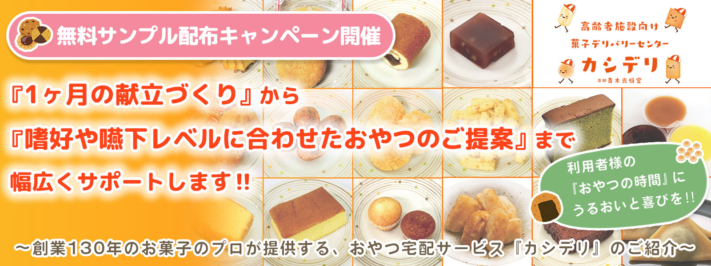
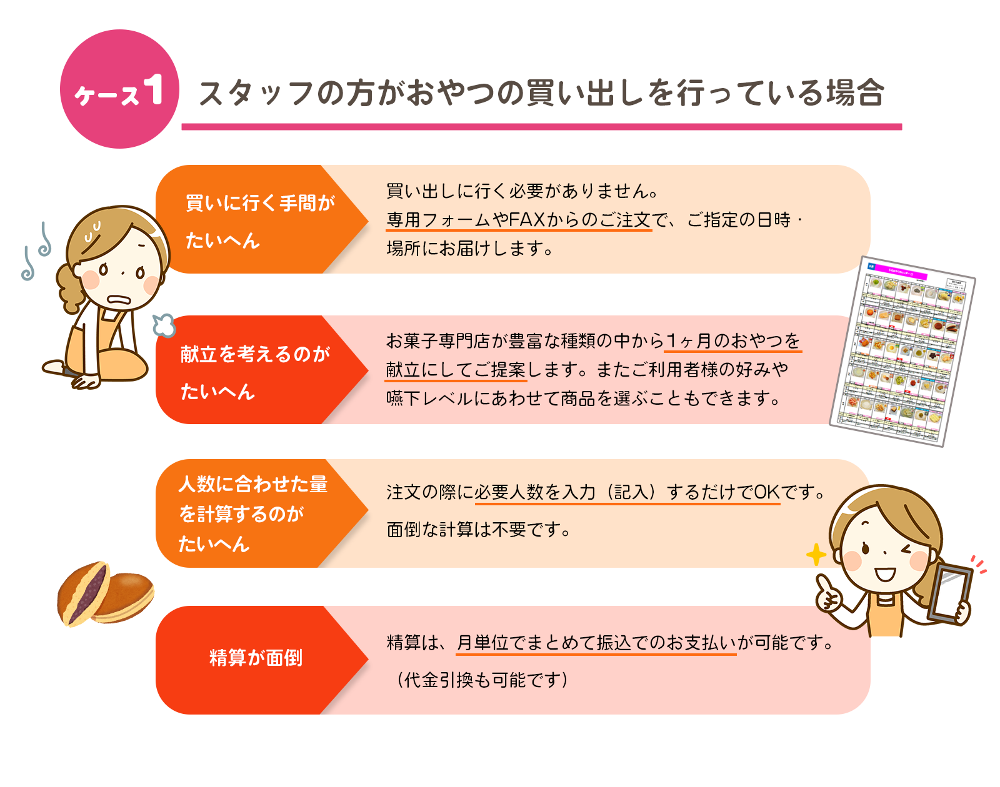
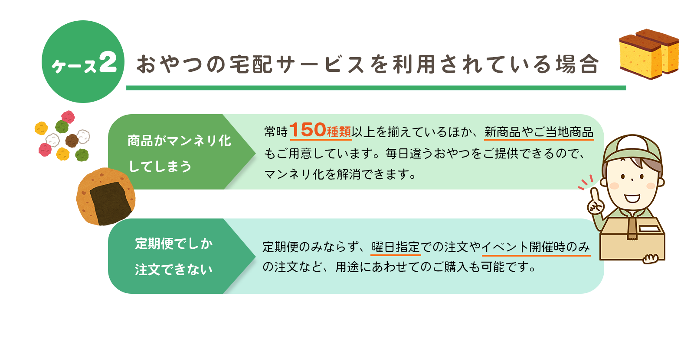
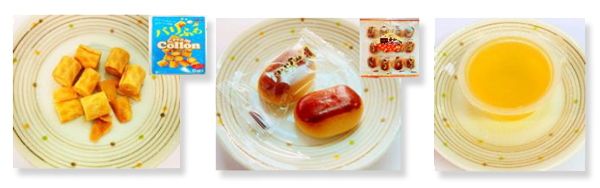
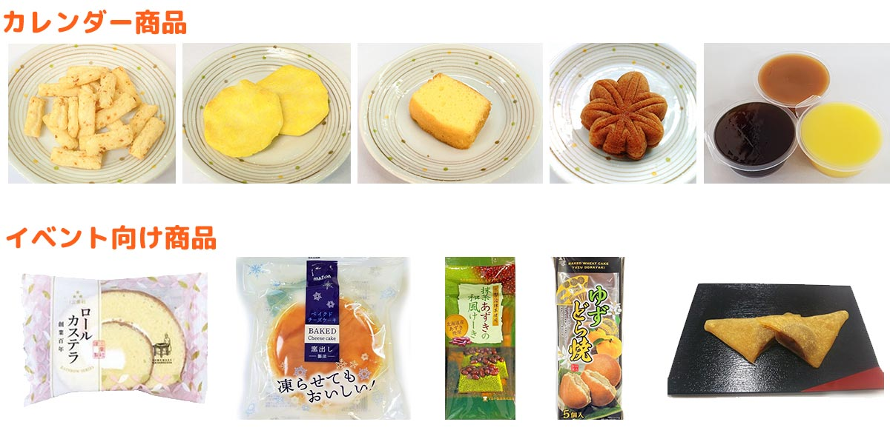
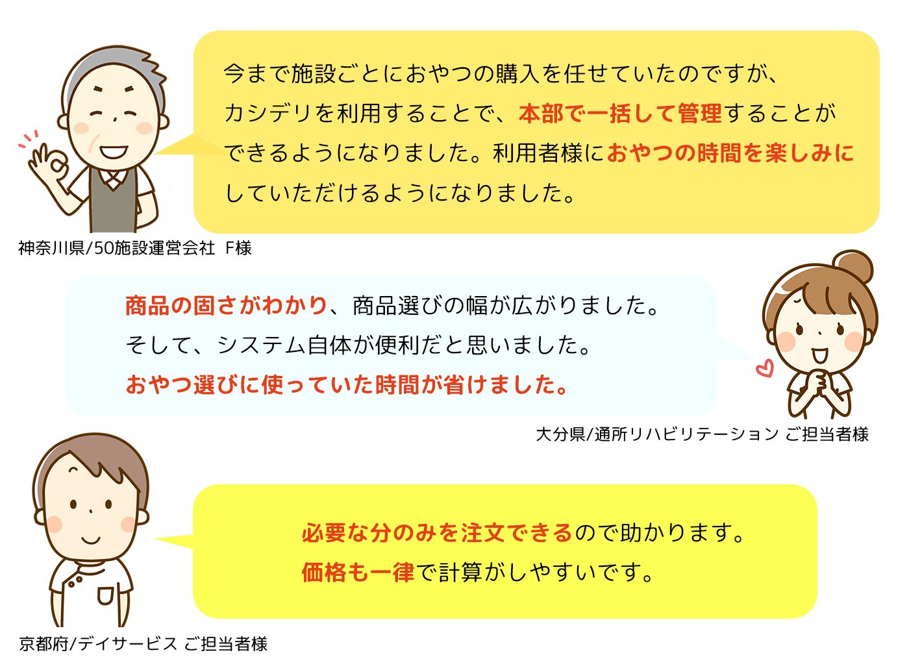
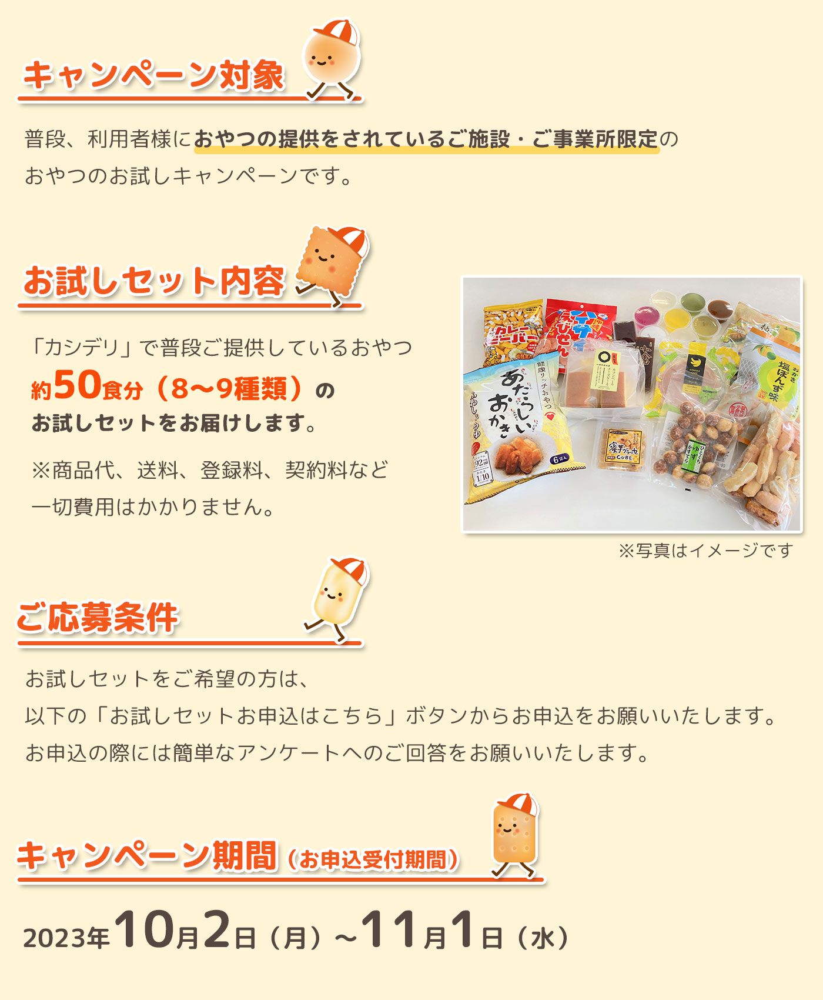

ご施設で過ごす利用者様にとって、他の高齢者との交流は大切な時間です。食事やおやつの時間は、
自然と会話が生まれるコミュニケーションの時間として、とても楽しみにされています。
特におやつの時間は、気分転換という言葉以上に、「生活にうるおいをもたらす」大切な時間です。
一方で、おやつ選びや買い出しなど、準備をするスタッフの方の日々の負担は決して小さくありません。
これらの業務負担を軽減すべく、最近ではおやつ提供にまつわる様々なサービスの活用も増えています。
今回は、高齢者施設におけるおやつの準備・提供業務をサポートする、スタッフの方目線で考えられた「おやつ宅配サービス カシデリ」をご紹介します。



感染症対策で、安全・安心におやつを取り分けたいというご要望にお応えし、
個包装のおやつのみの献立もご用意しています。
創業明治25年、京都の菓子製造卸会社「青木光悦堂」が運営する高齢者施設向けのおやつデリバリーサービスです。
高齢者向けの柔らかいお菓子や個包装のお菓子を中心に常時150種類以上の商品をご用意しています。新商品も毎月4品以上登場します。

利用者様の嗜好にあわせて選ぶことも可能です。ゼリー類など嚥下困難な方向けの手間いらずのおやつもご用意しています。
定期購入以外に、曜日指定でのご注文やイベント開催時のみのご注文など用途にあわせたご購入も可能です。
スマホやパソコン、タブレットから簡単にご注文ができ、お支払いは月単位で一括精算が可能です。
（FAXでのご注文、代金引換も可能です。）


企業情報
| 株式会社青木光悦堂 |
創業明治25年の菓子製造卸会社。京都市山科区で、かりんとうやおせんべい等の日本の伝統的な和系の袋菓子を企画開発。北海道から沖縄まで全国のこだわりスーパーマーケットへ販売するほか、本社内小売店での直売対応や、一般消費者向けのWeb店も開設。また、全国の高齢者施設様向けに日替わりのおやつを宅配するサービス『カシデリ』も運営。施設利用者様へのおやつの提供業務において、職員様の負担軽減に繋がるサービスとして展開。
青木光悦堂ホームページ：https://info003104.wixsite.com/my-site-5/
高齢者施設向けお菓子宅配サービス『カシデリ』ホームページ：https://kashideri.com/